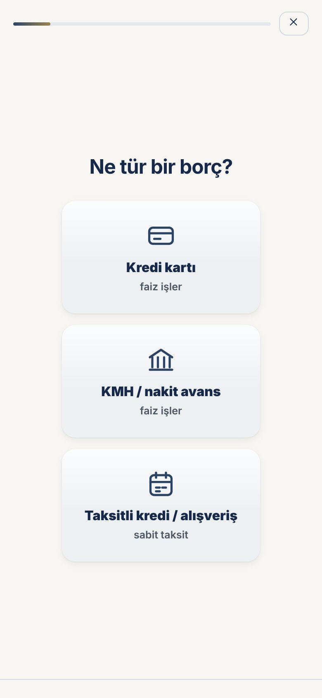

Borcun ne zaman biter?
Borçlarını bir kez gir. Borçsuz olacağın ayı, bu ay ne ödeyeceğini ve ne kadar faizden kurtulabileceğini gör.
Bütün borçların tek yerde.
Kart, KMH, kredi: bu ay, plan ve ilerleme.
Aynı borç, iki yol.
Maya'nın kredi kartında ₺40.000 borcu var, aylık faiz %3,75.
₺35.322 faize gider
₺16.493 faize gider
19 ay erken biter, ₺18.829 daha az faiz.
Kurgusal örnek, uygulamanın kendi hesap motoruyla: sabit aylık ödeme, aylık bileşik faiz; vergi, masraf ve yeni harcama dahil değil. Finansal tavsiye değildir.
Küçük değişiklik, erken sıfır.
Neyi azaltabileceğini seç. Uygulama borcunu kaç ay erken bitirdiğini gösterir; kumbarada biriktirip tek dokunuşla borca yatırırsın.
Verilerin telefonundan çıkmaz.
- Hesap yok
- Banka bağlantısı yok
- İnternetsiz çalışır
- Reklam ve izleme yok
- Tamamen ücretsiz
Uygulamadan kareler
Uygulamanın gerçek ekranları. Örnekteki veriler uydurmadır.

Sorular
Ücretsiz mi?
Evet. Tüm özellikler ücretsiz: deneme süresi, abonelik ya da reklam yok.
Verilerim nereye gidiyor?
Hiçbir yere. Her şey cihazında saklanır; sunucu yok.
Banka hesabımı bağlamam gerekiyor mu?
Hayır, hiçbir zaman. Rakamları sen girersin.
Hangi borçları destekliyor?
Kredi kartı, KMH, taksitli krediler ve taksitli alışverişler.
Bu finansal danışmanlık mı?
Hayır. Eğitim ve matematiksel planlama aracıdır; bankanın gerçek tutarları farklı olabilir.
iPhone mu, Android mi?
iPhone sürümü App Store incelemesinde. O zamana kadar, Android'de de, tarayıcında kullanıp ana ekranına ekleyebilirsin.